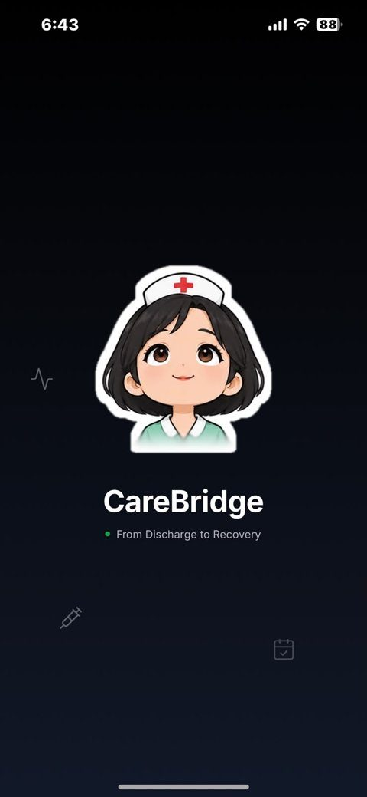
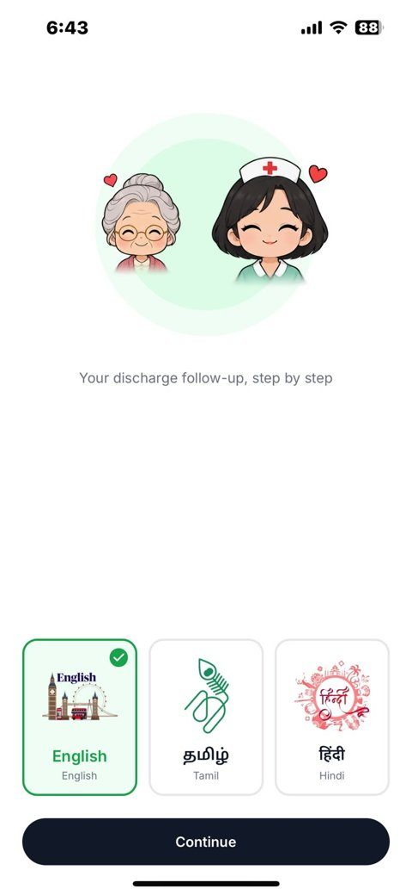
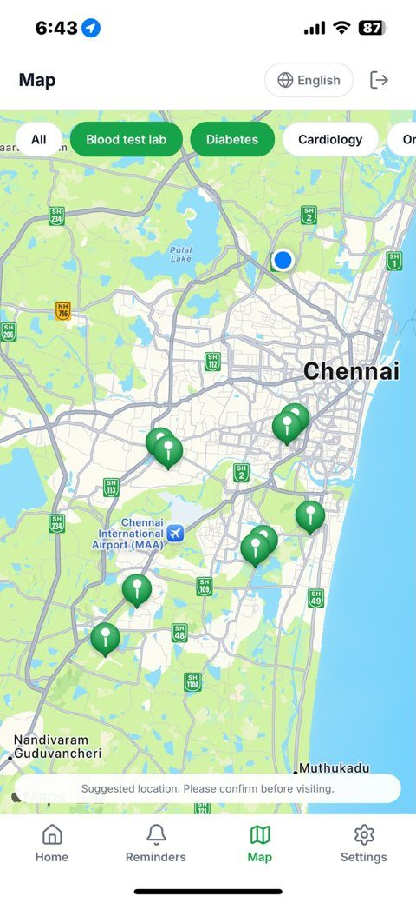
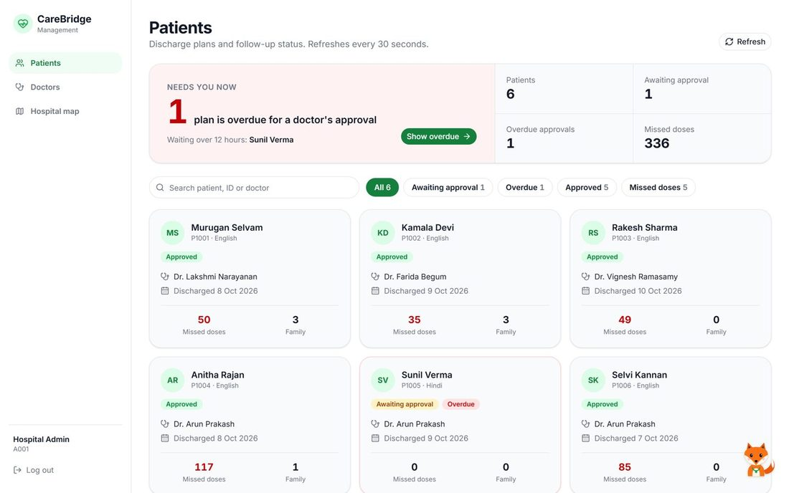
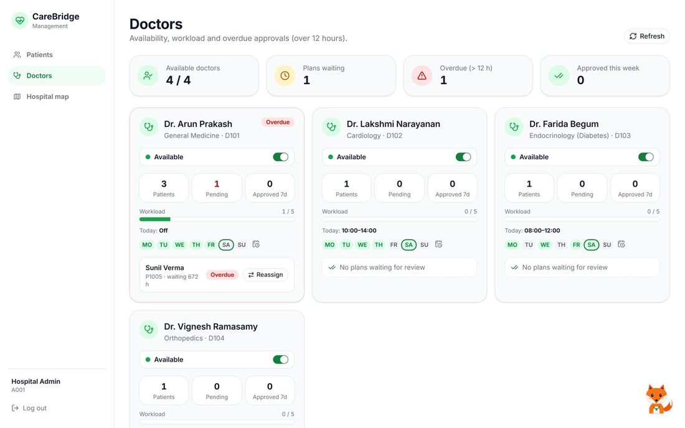
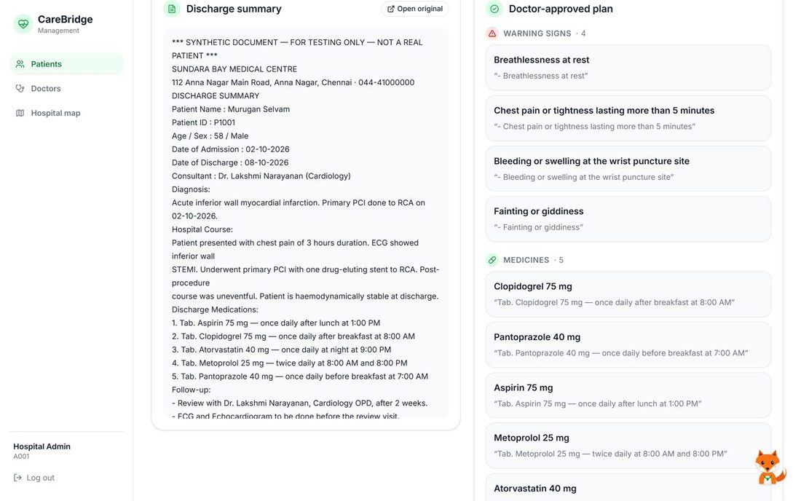
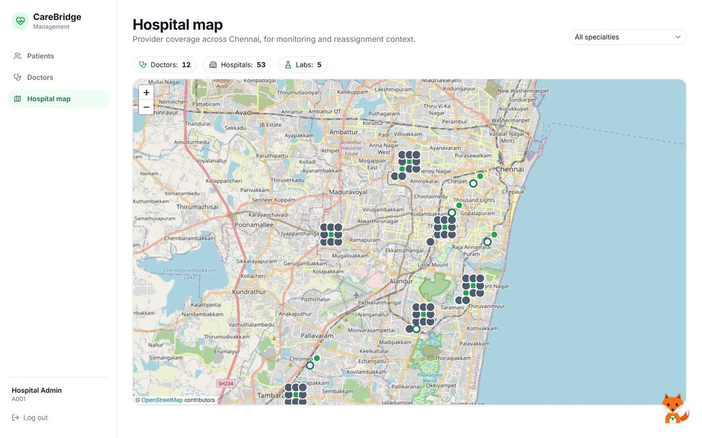

Design
From Carepedia, the free encyclopedia
CareBridge uses a white and green visual system. Screens below use synthetic test data.
Mascots[edit]

The app has three mascots: a nurse, a grandmother and a seedling robot. The admin console has a fourth, a fox. The nurse is also Carepedia's logo.
Screens[edit]

Splash 
Language picker 
Patient home 
Provider map

What needs attention now 
Doctors, availability and workload 
The summary beside the approved plan 
Provider coverage map